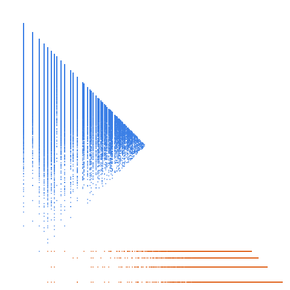

Numbers that are not squarefree. Numbers that are divisible by a square greater than 1. The complement of A005117

Open in the 3-D viewerA013929 on the OEIS
| Terms | 100,000 (n = 1 … 100,000) |
|---|---|
| Decomposable (a > 2d) | 99,999 |
| Level class, k > L | 13,025 · 13.03 % |
| Weight class, k ≤ L | 86,974 · 86.97 % |
| Ties, k = L | 18 |
| On the level line L = 1 | 4,348 |
| Forced level, l ≤ d² | 3 |
| Range of a(n) | 4 … 255,051 |
| Range of the jump d | 1 … 4 |
| Largest weight k, level L | 255,049, 127,525 |
Numbers divisible by a square > 1. Only four gaps occur here, 1 to 4. The level share is 13.03 %, spread over L = 1, 2, 4 and 3.
The decomposition
Every term of a strictly increasing sequence is written a(n) = k(n)·L(n) + d(n): the jump d = a(n+1) − a(n), the weight k the least divisor of a − d greater than d, the level L = (a − d)/k. A term decomposes when a > 2d; it is in the level class when k > L and in the weight class when k ≤ L. See decompwlj.com and arXiv:0711.0865.